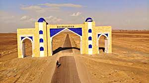
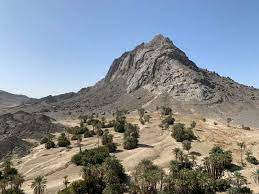
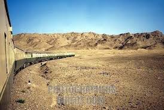

The Kharan Desert is a sandy and mountainous desert situated in Balochistan province in south-western Pakistan. The desert covers an area of about 36,000 square kilometers, making it one of the largest deserts in Pakistan. The desert is known for its arid climate and harsh conditions, with high temperatures and very little rainfall. It is home to a variety of plants, tree and animals that are adapted to the desert environment, including the fabled Kharan camel, which is native to the region. This desert was the site of Pakistan's second nuclear test, Chagai-II, which was carried out on 30 May 1998. The land is not fit for agriculture due to low irrigation. The occupation is mainly agriculture and farming. The terrain is mainly dry, grey-brown sand that stretches out. Alexander the Great travelled through this region. He had entered the Indus Valley from the historic Khyber Pass and after defeating Porus, in the fourth century BC, he made his way back to Babylonia and passed through the Kharan desert (It was known as Gedrosia at that time), in an attempt to compare himself against Cyrus the Great who had once passed through the desert. The terrain of the desert is mostly flat, with sand dunes and rocky outcrops. The climate is arid, with high temperatures and very little rainfall. The desert is bounded by the Dasht River to the north and the Chagai Hills to the west. To the south and east, the desert borders the Balochistan Plateau.
 ;  